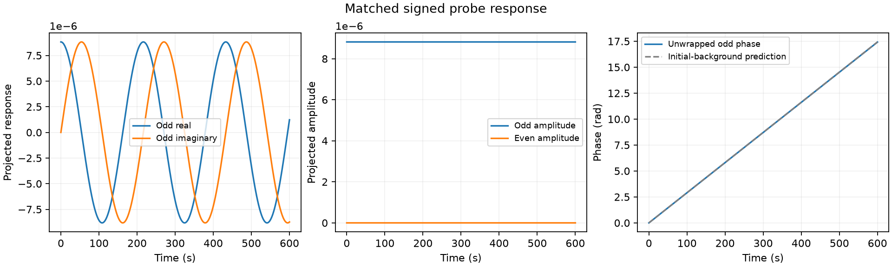

Odd response=(a_plus−a_minus)/2; linear finite-difference response=odd/probe_amplitude. Even response=(a_plus+a_minus)/2−a_baseline. Signs denote opposite initial amplitudes of the same eigenmode, not opposite propagation branches.

| Diagnostic | Value |
|---|---|
| Candidate angular frequency (rad s⁻¹) | -0.0290313 |
| Initial-background prediction (rad s⁻¹) | -0.0290583 |
| Effective amplitude growth rate (s⁻¹) | 1.06041e-10 |
| Complex exponential coherence | 1 |
| Even / odd response norm | 1.17888e-14 |
| Passes stated coherent-wave diagnostic conventions | True |
An effective exponential response on the measured evolving background. Loss of coherence or large even response prevents identification with a stationary vortex-wave frequency; no frequency is forced to match theory.